How it's built
Every rule in PD2 Hub comes from reverse engineering Project Diablo 2's own code. Rules checked by running the game's real code in an emulator against PD2 Hub's model are marked VERIFIED; rules read from the code but not yet run are READ and treated as leads. Game data (skills, items, monsters, maps) is read straight from the current pd2data.mpq, so it follows the season.
Character
Load a character from the PD2 Armory by name, drop in an Armory export or a .d2s save, or build one from scratch. The desktop app watches your save folder and reloads when the game saves.
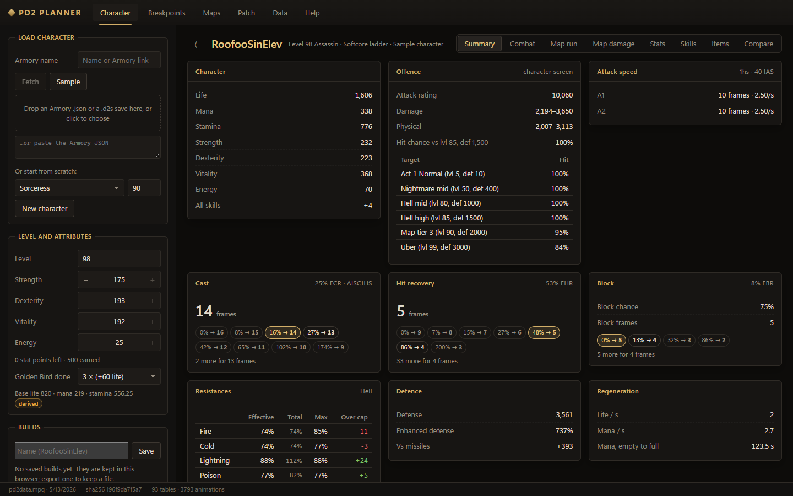
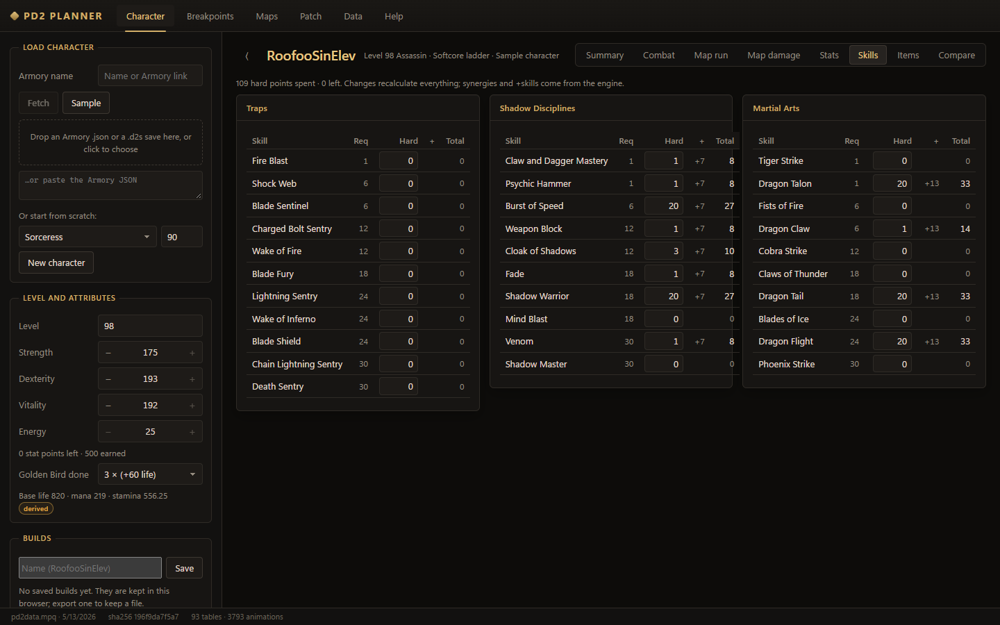
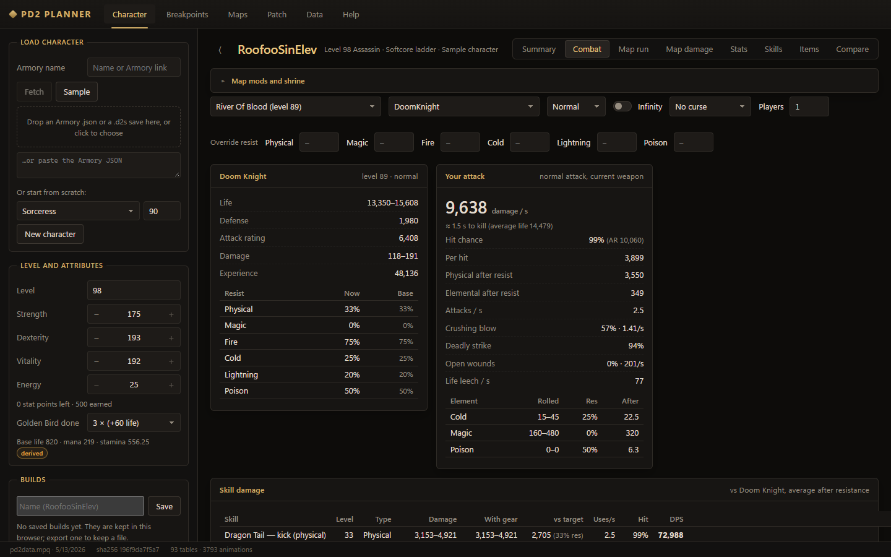
- Items, charms, jewels, runewords, sets, the mercenary and its auras, party auras, buffs and shrines.
- Map mods on both sides: monster life, damage, resistances, damage reduction and absorb, Fortified, Treacherous, Sundered.
- Saved builds, compare two builds side by side, export and import.
Map run
Your character clears a real PD2 map, pack by pack, and you watch the replay. The monsters are placed the way the game spawns them for that layout; the route follows the map's pathing guide from hiimpd2.com (used with permission), straying off it for kills.
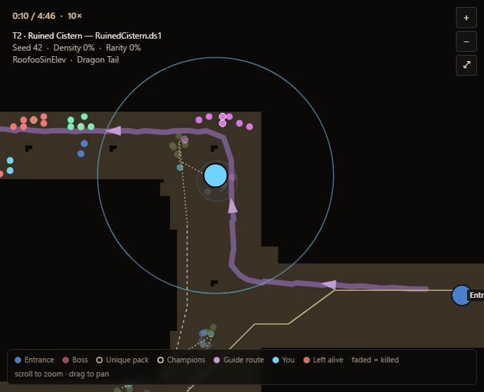
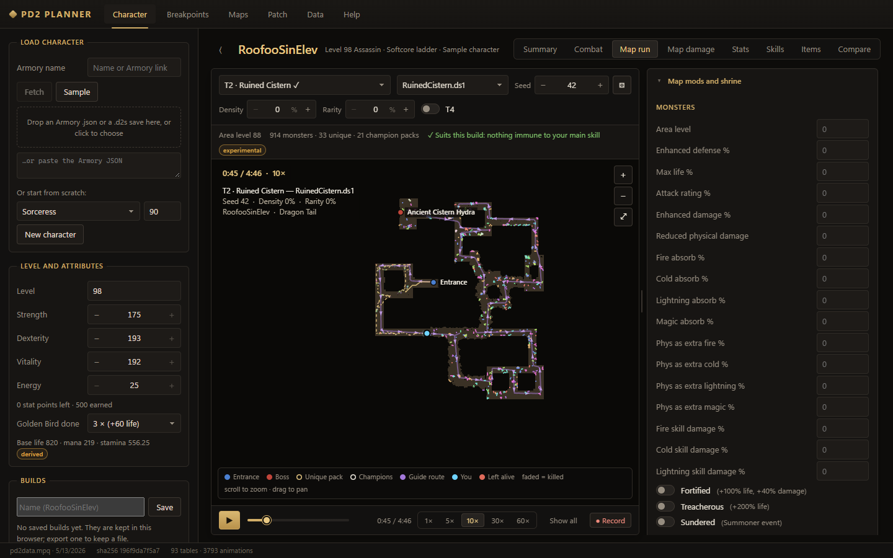
What's simulated
- Routes: the map's pathing guide, a planned shortest tour, or exploring an unknown map (keeping left, right or nearest-first — whichever is quickest). Clear % skips the stragglers that cost the most route per monster.
- Fights: your skill's real shape and reach, aimed where it hits the most; your mercenary and summons (Shadow Warrior and Master with their decoded AI); monster attacks, curses, auras, elite modifiers and immunities.
- Poison: one poison per monster that never stacks (VERIFIED) — you move on once the poison on the pack will kill it.
- A single-target skill for the boss, uniques and champions once the rest is down.
- Survival: life, leech, regeneration, potions (the game's own potion code, VERIFIED), mana and town trips.
- Immunes: leave what your skills can't hurt, or let your pets kill them.
Movement & aggro
Each class moves with its own skill — Teleport, Dragon Flight, Joust, Leap, Gust, Blood Warp — at your real cast or attack rate, with its cooldown. Toggle Enigma for Blink (charges) on any class, or Zerae's Resolve for an Amazon's Joust.
- Aggro, from the game's code: a monster notices you within its aggro radius (35 for most) with line of sight, checks every 10–25 frames while idle (VERIFIED), follows while you're in reach, and stops where it is when you get away — no leash.
- Monsters you pass get pulled along and hit you on the way; melee monsters walk to you in fights, casters keep their spot.
- Teleport range is where you could click on screen, as in the game.
Traps
Assassin sentries are simulated as the game runs them: at most 5 out, each firing its shots on its own timer, thrown at your attack speed. Use an area trap for packs and a single-target one for elites, and they're thrown as a mix.
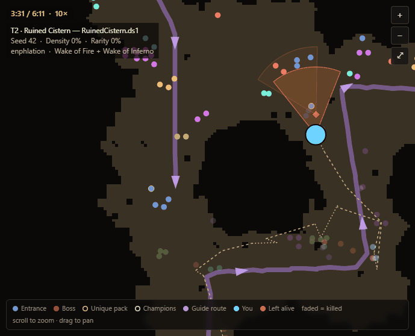
Batch runs
One run is one spawn. Run your build over many seeds — on one layout or every variation of the map — and get the average clear time and how much it varies.
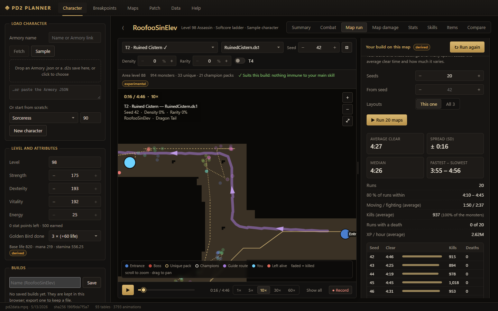
Map damage
Every monster of a map against your damage — the idea of finpingvin's PD2 map damage calculator, rebuilt on PD2 Hub's RE-checked rules: pierce only below immunity, negative resistance halved, the −100 floor, and Conviction and curses halved per source on immunes (VERIFIED).
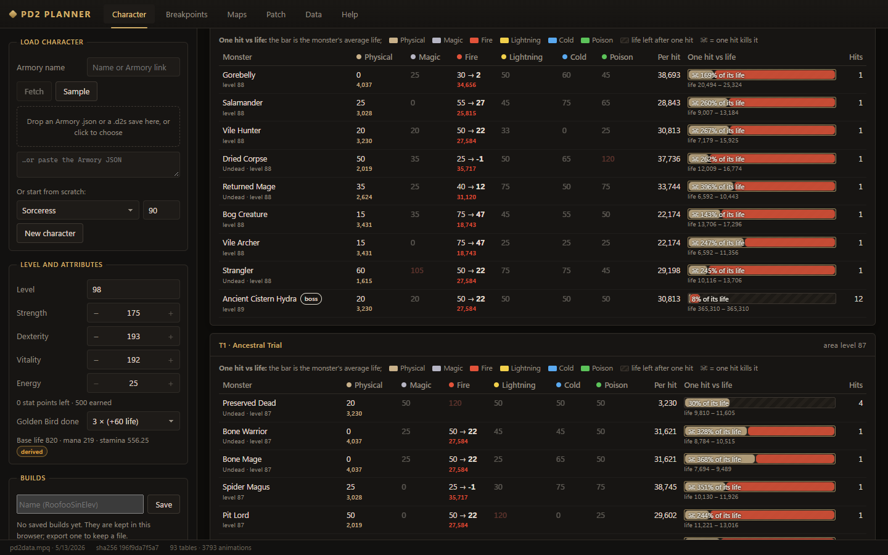
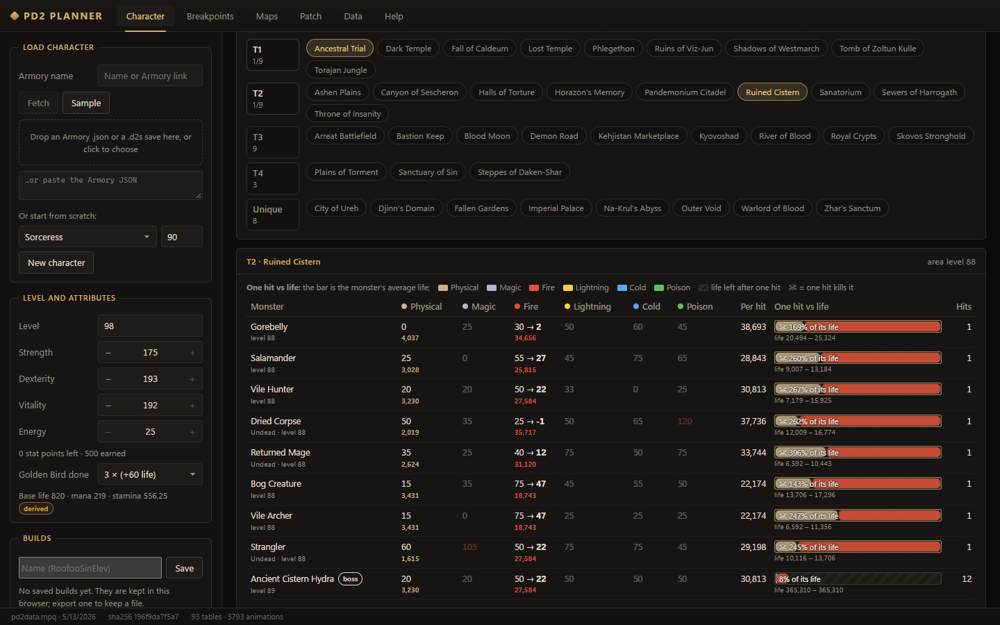
Maps
The spawn simulator on its own: every PD2 map and layout variation, with the monsters placed for any seed, density and rarity, the elite packs and their modifiers, and the pathing guide.
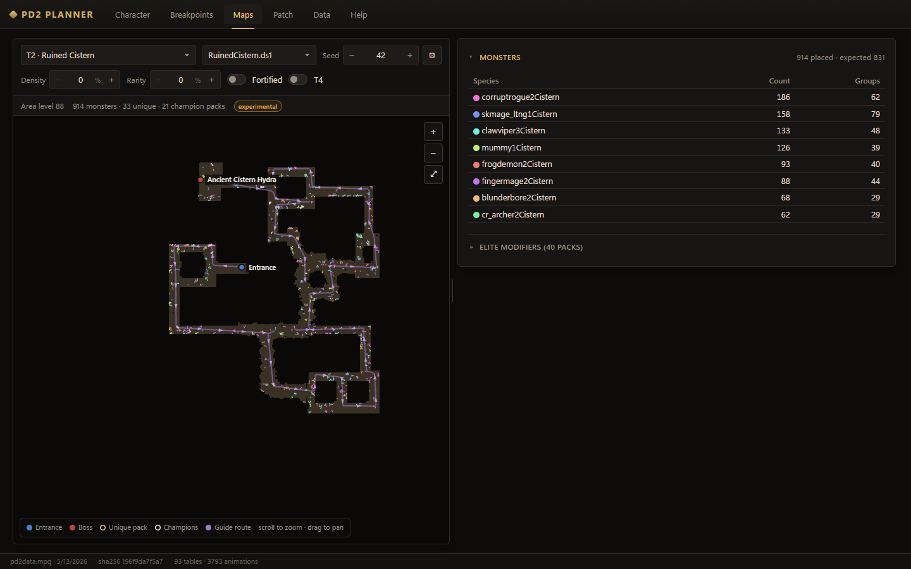
Breakpoints
Attack, cast, hit-recovery and block frames for every class, form, skill and weapon, from the game's own animation data.
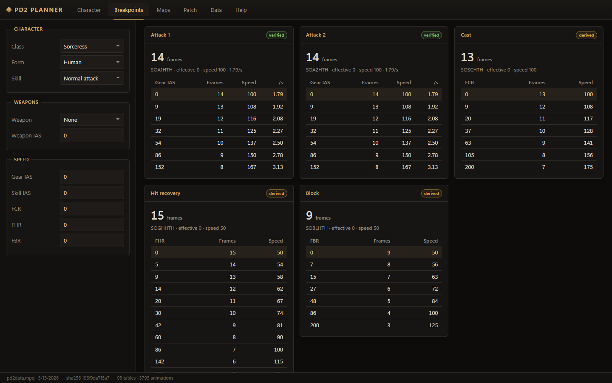
Updates & help
The desktop app checks for new versions once a day and installs them when you say so (Help → Check for updates). Report a bug or suggest a feature from the Help tab — the report opens on GitHub with your version filled in.
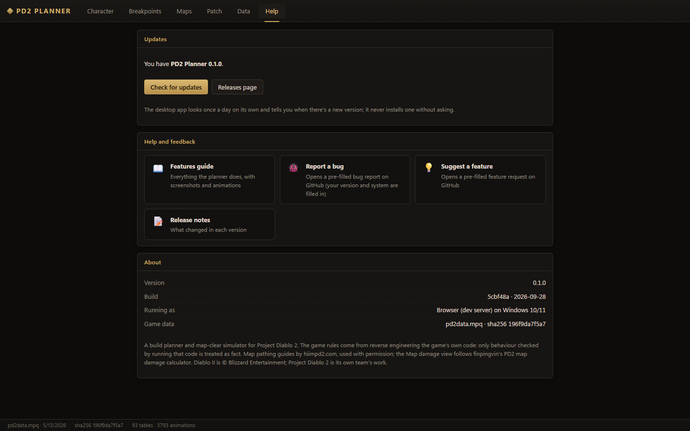